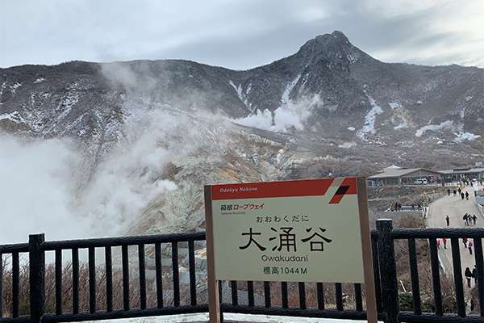

Obihiro is very countryside in Hokkaido.
there are many nature and animals.
And ...they have a fotune-teller! Please try once.They can tell you many advices you need.
I went to there once then it was unbelivable they knew my past and future.
continue

Have you ever seen an black egg?
There are black eggs in a Mountain, Okuwadani.
We can eat in an cafe there or buy for suvenior.
Please try to one time!
continue
"Maiko" and "Geiko" are female performers who perform music and dance on a stage or at a benquet.
Maiko are apprentices usually between 15 and 20 years old who become geiko when they finish their trainning.
In Kyoto, there are five kagai(geisha district).They live in okiya(teahouse which maiko and geiko belong to)
to learn tranditional customs and performances.
continue
Shibuya Sky is built in Novenber,2019.
aaaaaaaaaaaaaaaaaaaaaaaaaaaaaaaaaaa
aaaaaaaaaaaaaaaaaaaaaaaaaaaaaaaaaaa
aaaaaaaaaaaaaaaaaaaaaaaaaaaaaaaaaaa
aaaaaaaaaaaaaaaaaaaaaaaaaaaaaaaaaaa
aaaaaaaaaaaaaaaaaaaaaaaaaaaaaaaaaaa
continue